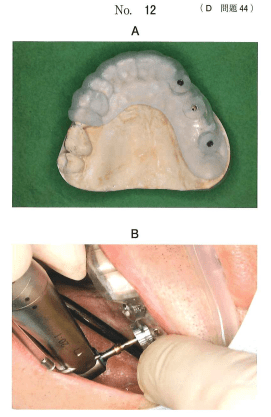
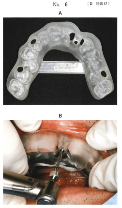
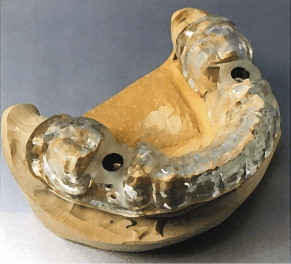
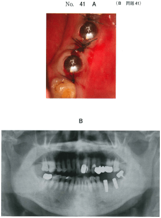
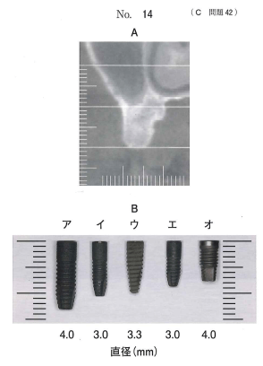

インプラント埋入時に使用するガイド装置。CAD/CAMと3Dプリンターで製作されることが多い。
| 1回法が適応 | 2回法が適応 |
|---|---|
| 初期固定が強固 | 骨移植を併用 |
| 口腔衛生状態が良好 | 感染リスクが高い |
| 外力が加わりにくい | 外力で骨結合阻害の恐れ |
※オッセオインテグレーション獲得までの期間は1回法も2回法も同じ
58歳の男性。咀嚼困難を主訴として来院した。診察の結果、上顎左側欠損部にインプラント義歯を製作することとした。インプラント埋入手術のために製作した装置（別冊No.12A）と装置を用いた処置時の写真（別冊No.12B）を別に示す。
この装置の使用目的はどれか。2つ選べ。

【解説】写真はサージカルガイドである。上顎臼歯部のインプラント埋入において、埋入位置の規定と上顎洞穿孔の防止が目的となる。開口保持やトルク値設定は別の装置の役割。熱傷防止は注水で行う。
65歳の男性。上顎左側側切歯欠損による審美不良を主訴として来院した。診察の結果、インプラント補綴治療を行うこととした。治療に用いた装置の写真（別冊No.6A）と治療中の写真（別冊No.6B）を別に示す。
この装置の目的はどれか。1つ選べ。

【解説】写真はサージカルガイドを用いた埋入手術である。サージカルガイドの主な目的はインプラント体埋入方向の誘導である。アバットメント装着や印象採得は埋入手術後の処置。
模型に適合させた装置の写真（別冊No.56）を別に示す。
インプラント埋入のためのドリリング時に本装置を使用する目的はどれか。2つ選べ。

【解説】写真はサージカルガイドである。ドリリング時の目的として周囲組織の保護と適切な方向の確保が挙げられる。発熱軽減は注水、出血量減少は止血処置による。
60歳の男性。下顎臼歯部欠損による咀嚼困難を主訴として来院した。インプラント義歯にて補綴することとした。インプラント体埋入手術直後の口腔内写真（別冊No.41A）とエックス線写真（別冊No.41B）を別に示す。
この術式の特徴で正しいのはどれか。1つ選べ。

【解説】写真からインプラントの一部（ヒーリングアバットメント）が粘膜上に露出していることがわかる。これは1回法である。1回法の特徴は二次手術を必要としないこと。初期固定や即時荷重の可否は術式ではなく骨質や症例による。上顎にも適用可能。
65歳の男性。咀嚼困難を主訴として来院した。診察の結果、上顎右側第一大臼歯相当部にインプラントを埋入することとした。埋入予定部位の再構成CT冠状断像（別冊No.14A）と各種インプラント体の写真（別冊No.14B）を別に示す。なお、A、Bともスケールの目盛りは1mmである。
埋入するのに最も適したインプラント体はどれか。1つ選べ。

【解説】CT画像から骨の高さと幅を計測し、上顎洞までの距離と骨幅を考慮して適切なサイズのインプラント体を選択する。上顎洞底を穿孔しない長さで、骨幅に収まる直径のものを選ぶ。